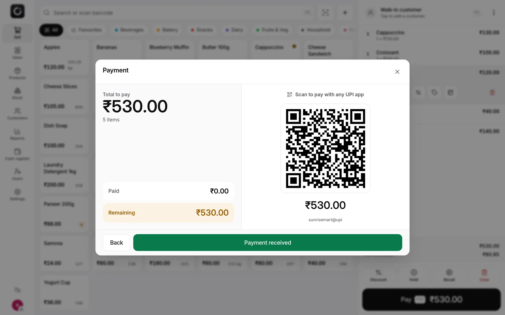

Fast at the counter
Tap products, scan barcodes with a USB scanner or the phone camera, and take payment in two taps. The cart survives crashes and reloads.
- Split payments across cash, card, UPI and customer credit
- A UPI QR code with the amount already filled in
- Weighed items, scale barcodes, discounts, notes and held sales
- Keyboard shortcuts for everything, and a second screen for the customer
